شبنم رضاپور
کسی که PDFها را راضی کرد محتوایشان را بیکموکاست لو بدهند.
این جزوه با استفاده از جزوهساز پاپیروس و به صورت خودکار تولید شده است. ممکن است شامل خطا یا برداشت نادرست باشد و نیازمند بررسی و بازبینی مجدد است.
کمخونی مگالوبلاستیک در اثر کمبود ویتامین B12 یا اسید فولیک یا هردو ایجاد میشود. برای فهم اختلال خونسازی، ابتدا نقش این دو ماده در بدن و سپس یافتههای خونی بررسی میشود. در ادامه، مورفولوژی گلبول قرمز، اجسام داخل آن، تغییرات ناشی از نمونه و شرایط آزمایشگاهی، و پرسشهای پایان جلسه مطرح میشوند.
ساختار ویتامین B12 حلقهای شبیه حلقهٔ تتراپیرول دارد؛ همان حلقهای که در هموگلوبین وجود دارد، با این تفاوت که اتم مرکزی آن کبالت است. به همین دلیل، ویتامین B12 را کوبالامین نیز مینامند.
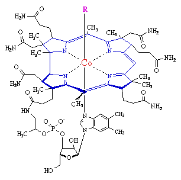
تصویر اولمنابع مهم ویتامین B12 غذاهای حیوانی، بهویژه گوشت و احشای حیوانات مانند کبد و قلوه، و نیز تخممرغاند. بنابراین، گیاهخواران مستعد کمبود B12 هستند. کمبود این ویتامین، علاوه بر اختلال خونسازی، میتواند اختلالات نورولوژیک و عصبی ایجاد کند؛ برای مثال، بیمار ممکن است حافظهاش را از دست بدهد، حالتی شبیه آلزایمر پیدا کند، حس تعادل یا حس vibration را از دست بدهد و نتواند ارتعاش را حس کند. این اختلالات ممکن است برگشتناپذیر باشند؛ بنابراین، تشخیص زودهنگام کمبود اهمیت دارد.
برای جلوگیری از کمبود B12 باید گوشت، تخممرغ و دیگر غذاهای حیوانی مصرف کرد. در درس گفته شد که کبد حدود یک میلیگرم ویتامین B12 ذخیره دارد؛ بنابراین، فردی که گیاهخوار میشود ممکن است تا دو سه سال کمبود آشکاری پیدا نکند، چون کبد ذخیره دارد. نیاز روزانهٔ B12 حدود ۲۰ تا ۳۰ میکروگرم بیان شد.
برای جذب ویتامین B12، معده باید فاکتور داخلی (intrinsic factor) بسازد. اگر معده دچار التهاب یا گاستریت باشد، ممکن است نتواند فاکتور داخلی ترشح کند. در بعضی بیماران نیز علیه فاکتور داخلی آنتیبادی ساخته میشود که به آن متصل میشود و آن را خنثی میکند.
ویتامین B12 به فاکتور داخلی متصل میشود و از این راه جذب میشود. پس از ورود این مجموعه به روده، ویتامین B12 جذب میشود. سپس پروتئینی به نام ترانسکوبالامین ۲ (transcobalamin ۲) آن را حمل میکند و به بخشهایی از بدن میرساند که به آن نیاز دارند؛ ترانسکوبالامین ۲، کوبالامین را منتقل میکند. باقی ترانسکوبالامینها وظیفه ذخیرهسازی دارند.
ساختار اسید فولیک شامل دو حلقهٔ شبیه پیرول است که حلقههای پتریدین نامیده میشوند. حلقهٔ پترین به آمینوبنزوئیک اسید و سپس به گلوتامیک اسید متصل است و این ترکیب اسید فولیک را میسازد.
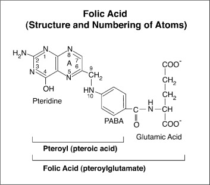
تصویر دوماسید فولیک در سبزیجات، بهخصوص سبزیجات برگپهن، وجود دارد. میتوان به پاپایا، آووکادو، مارچوبه و ... نیز اشاره کرد.
اسید فولیک در دوران جنینی اهمیت دارد. اگر خانمی کمبود اسید فولیک داشته باشد و باردار شود، ممکن است در جنین نقص لولهٔ عصبی (neural tube defect; NTD) ایجاد شود. در تصویر توضیحدادهشده، لولهٔ عصبی باز است و ستون مهرهها و عصب نوزادی که با این نقص به دنیا آمده دیده میشوند. بنابراین، لازم است خانمها حتی پیش از بارداری وضعیت اسید فولیک بدنشان را بررسی کنند و دچار کمبود نباشند.
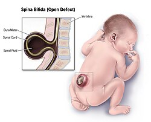
تصویر سوم نوع Spina Bifidaیکی از کارهای مهم ویتامین B12 و اسید فولیک کمک به ساختهشدن تیمین است. دئوکسییوریدین مونوفسفات به دئوکسیتیمیدین مونوفسفات تبدیل میشود. بازهای DNA عبارتاند از آدنین، سیتوزین، گوانین و تیمین؛ تیمین در بدن از یوراسیل ساخته میشود.
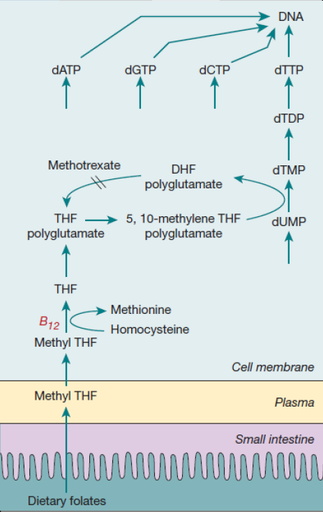
تصویر چهارمآنزیم تیمیدیلات سنتاز (thymidylate synthase) در این تبدیل نقش دارد و به اسید فولیک نیازمند است. فرم فعال اسید فولیک که در واکنش تیمیدیلات سنتاز به تبدیل یوراسیل به تیمین کمک میکند، با کمک ویتامین B12 به وجود میآید. بنابراین، در کمبود B12 یا اسید فولیک، تیمین کافی ساخته نمیشود و DNA بهدرستی سنتز نمیشود. B12 و اسید فولیک در سنتز DNA بهصورت تنگاتنگ عمل میکنند.
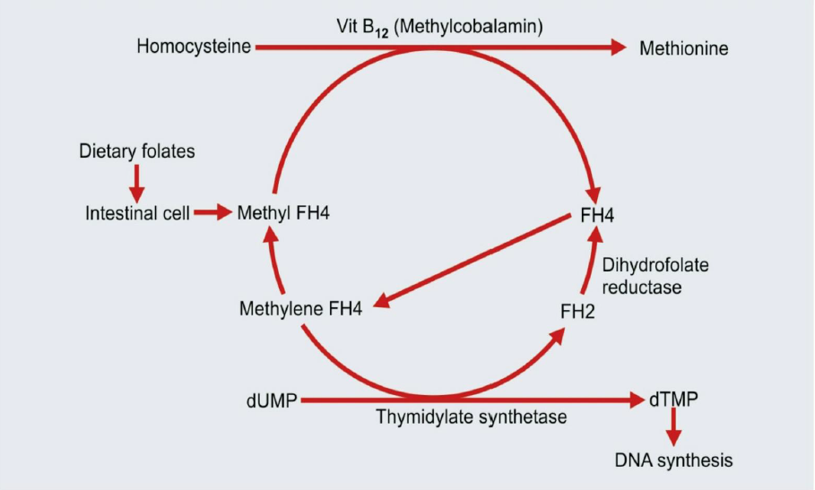
تصویر پنجمکار مشترک دیگر B12 و اسید فولیک، تبدیل هوموسیستئین به متیونین است. افزایش هوموسیستئین میتواند باعث سختی عروق و مشکلات متعدد شود.
یک واکنش دیگر را ویتامین B12 بهتنهایی انجام میدهد و اسید فولیک در آن نقشی ندارد: تبدیل متیلمالونیلکوآنزیم A به سوکسینیلکوآنزیم A. متیلمالونیلاسید نیز در توضیح این واکنش بهعنوان مادهای که به سوکسینیلکوآنزیم A تبدیل میشود، ذکر شد. سوکسینیلکوآنزیم A وارد چرخهٔ کربس میشود.
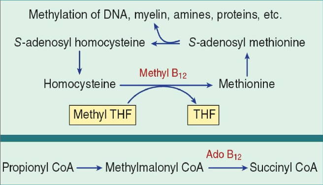
تصویر ششم| واکنش یا فرایند | نقش B12 | نقش اسید فولیک | نکتهٔ مطرحشده |
|---|---|---|---|
| کمک به ساختهشدن تیمین و سنتز DNA | با اسید فولیک بهصورت تنگاتنگ عمل میکند | در واکنش تیمیدیلات سنتاز لازم است | کمبود هرکدام ساخت تیمین و سنتز درست DNA را مختل میکند |
| تبدیل هوموسیستئین به متیونین | نقش دارد | نقش دارد | افزایش هوموسیستئین میتواند باعث سختی عروق و مشکلات متعدد شود |
| تبدیل متیلمالونیلکوآنزیم A به سوکسینیلکوآنزیم A | نقش دارد | نقشی ندارد | سوکسینیلکوآنزیم A وارد چرخهٔ کربس میشود |
در کمبود اسید فولیک یا ویتامین B12، اختلالات خونسازی شبیه هماند. از روی خون میتوان به وجود کمبود یکی از این دو پی برد، اما از یافتههای خون بهتنهایی نمیتوان تشخیص داد کدامیک کم است. کمخونی های مگالوبلاستیک در کمبود ویتامین B12 و فولیک اسید مشترکاند.
یکی از علائم زودرس، نوتروفیلهای هایپرسگمنت (hypersegmented neutrophils) در خون است. نوتروفیل طبیعی ۲ تا ۵ لوب دارد. اگر بیش از ۵٪ نوتروفیلها پنج لوب داشته باشند، یا حتی یک نوتروفیل با ۶ لوب یا بیشتر دیده شود، اصطلاح hypersegmented neutrophil به کار میرود.
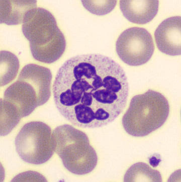
تصویر هفتماین یافته یکی از نخستین علامتهای کمخونی مگالوبلاستیک ناشی از کمبود اسید فولیک یا B12 است و با شمردن لوبها میتوان به آن پی برد.
با پیشرفت کمخونی، گلبول قرمز بزرگ و تخممرغی میشود و به آن macro-ovalocyte میگویند. افزایش MCV به بیش از ۱۰۰ از ویژگیهای مهم و پرتکرار در امتحان و کوییز است. چون گلبولها بزرگاند، MCV بالا میرود؛ MCH نیز بالا میرود، MCHC طبیعی میماند و RDW افزایش پیدا میکند.
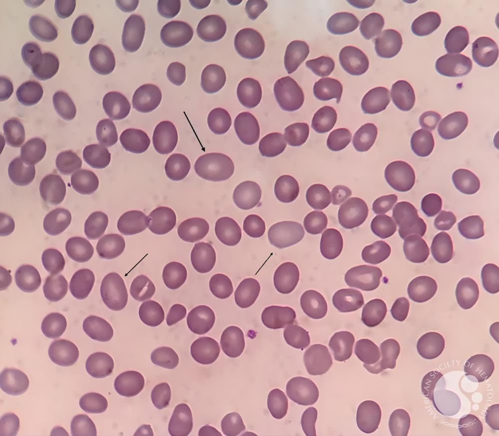
تصویر هشتمدر یک مثال، بیماری با چهرهٔ زرد لیمویی، LDH بیشتر از ۲۰۰۰ ــ درحالیکه مقدار طبیعی LDH تا ۲۰۰ بیان شد ــ و هموگلوبین ۷ مطرح شد. اندکسهای او عبارت بودند از:
در توضیح دیگری از همین مثال، MCV بیمار ۱۱۰ بود و مقدار طبیعیِ ذکرشده ۸۰ بود. MCH نیز بالا است. MCHC طبیعی میماند، چون با بزرگشدن گلبول، به تناسب حجم بزرگتر، هموگلوبین بیشتری هم در آن وجود دارد و نسبت وزن به حجم طبیعی باقی میماند. RDW نیز بالا میرود. اینها شاخصهای کمخونی مگالوبلاستیکاند و کمبود B12 یا اسید فولیک هر دو میتوانند این حالت را ایجاد کنند.
| شاخص یا یافته | الگوی گفتهشده در کمخونی مگالوبلاستیک |
|---|---|
| اندازه و شکل گلبول قرمز | بزرگ و تخممرغی؛ macro-ovalocyte |
| MCV | افزایش مییابد؛ بیش از ۱۰۰ از ویژگیهای مهم و پرتکرار در امتحان و کوییز بیان شد |
| MCH | بالا میرود |
| MCHC | طبیعی میماند |
| RDW | افزایش پیدا میکند |
در کمخونی مگالوبلاستیک، چون DNA ساخته نمیشود و تیمین کم است، تولید تیمین مختل میشود. در توضیح فرایند گفته شد که بهجای تیمین، یوراسیل وارد DNA میشود و آنزیم ویرایشگر سلول، DNA را خراب تشخیص میدهد و آن را تکهتکه میکند؛ درنتیجه، هستهٔ سلولهای قرمز در مغز استخوان میشکند. سلولی که هستهاش شکسته باشد دیگر به RBC تبدیل نمیشود. این سلولهای هستهدار در مغز استخوان میمیرند و به RBC تبدیل نمیشوند؛ به این وضعیت خونسازی غیرمؤثر (ineffective erythropoiesis) میگویند.
با شکستن گلبولهای قرمز هستهدار در مغز استخوان، آنزیم لاکتات دهیدروژناز (lactate dehydrogenase; LDH) آزاد میشود. LDH در همهٔ سلولها وجود دارد و در متابولیسم سلول نقش دارد. وقتی سلولها در مغز استخوان میشکنند، LDH از سیتوپلاسم وارد خون میشود. با شکستن گلبولها، مقداری بیلیروبین نیز بالا میرود و چهرهٔ بیمار زرد لیمویی میشود. بنابراین، بیماری با هموگلوبین ۷ و LDH بسیار بالا ممکن است ineffective erythropoiesis داشته باشد و زردی لیمویی او نیز با شکستن گلبولها ارتباط داشته باشد.
در کمخونی مگالوبلاستیک، سنتز RNA دچار مشکل نیست، اما سنتز DNA مشکل دارد. در تصویر توضیحدادهشده، گلبول قرمز در مغز استخوان هسته دارد و هموگلوبین ساخته شده است، چون RNA هموگلوبین میسازد؛ اما هسته هنوز بیرون انداخته نشده، زیرا میتوزهای هسته کامل نشدهاند و DNA دچار مشکل بوده است. این ناهماهنگی میان رشد هسته و سیتوپلاسم را asynchronous maturation یا عدم هماهنگی بین رشد هسته و سیتوپلاسم مینامند.
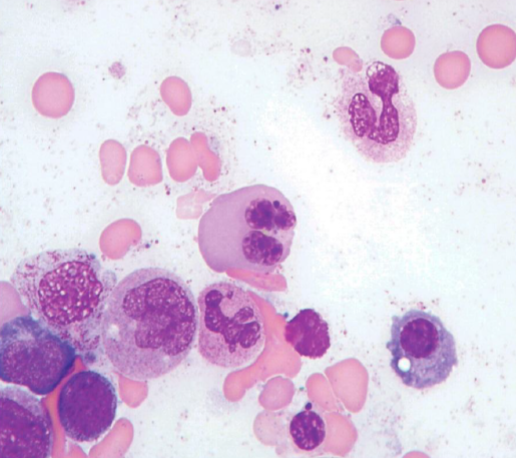
تصویر نهمویتامین B12 و اسید فولیک برای رشد سلولهای اپیتلیال نیز لازماند. زبان بیمار ممکن است براق شود؛ این حالت در کمخونی فقر آهن و نیز در کمخونی مگالوبلاستیک دیده میشود.
در کمخونی مگالوبلاستیک، بهعلت شکستن هسته، ممکن است اجسام Howell–Jolly در خون دیده شوند و حتی یک گلبول قرمز ممکن است چند Howell–Jolly body داشته باشد.
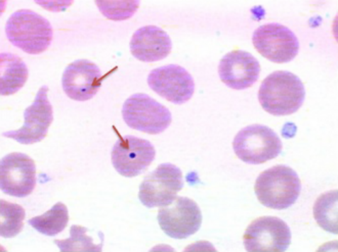
تصویر دهمبرای تشخیص اینکه یافتههای خون محیطی، مانند hypersegmented neutrophils و macro-ovalocytes، ناشی از کمبود B12 است یا اسید فولیک، میتوان در آزمایشگاه موارد زیر را اندازه گرفت:
ممکن است پزشک برای بیمار هر دو، یعنی اسید فولیک و B12، را تجویز کند؛ اما برای افتراق کمبودها، الگوی آزمایشگاهی کمککننده است:
بنابراین، بالا بودن هر دو به نفع کمبود B12 است؛ اما اگر متیلمالونیلاسید طبیعی و هوموسیستئین بالا باشد، به کمبود اسید فولیک فکر میکنیم.
| یافتهٔ آزمایشگاهی | کمبود اسید فولیک | کمبود B12 |
|---|---|---|
| متیلمالونیلاسید | طبیعی | بالا |
| هوموسیستئین | بالا | بالا |
گلبول قرمز طبیعی گرد است و هالهٔ مرکزی دارد. به تغییرات شکل گلبول قرمز poikilocytosis میگویند؛ اگر تغییرات شکل و اندازه با هم وجود داشته باشند، anisopoikilocytosis گفته میشود.
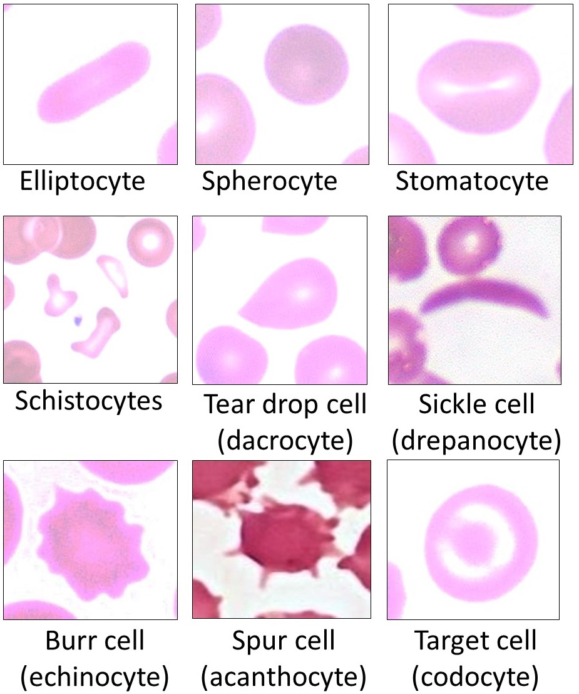
تصویر یازدهم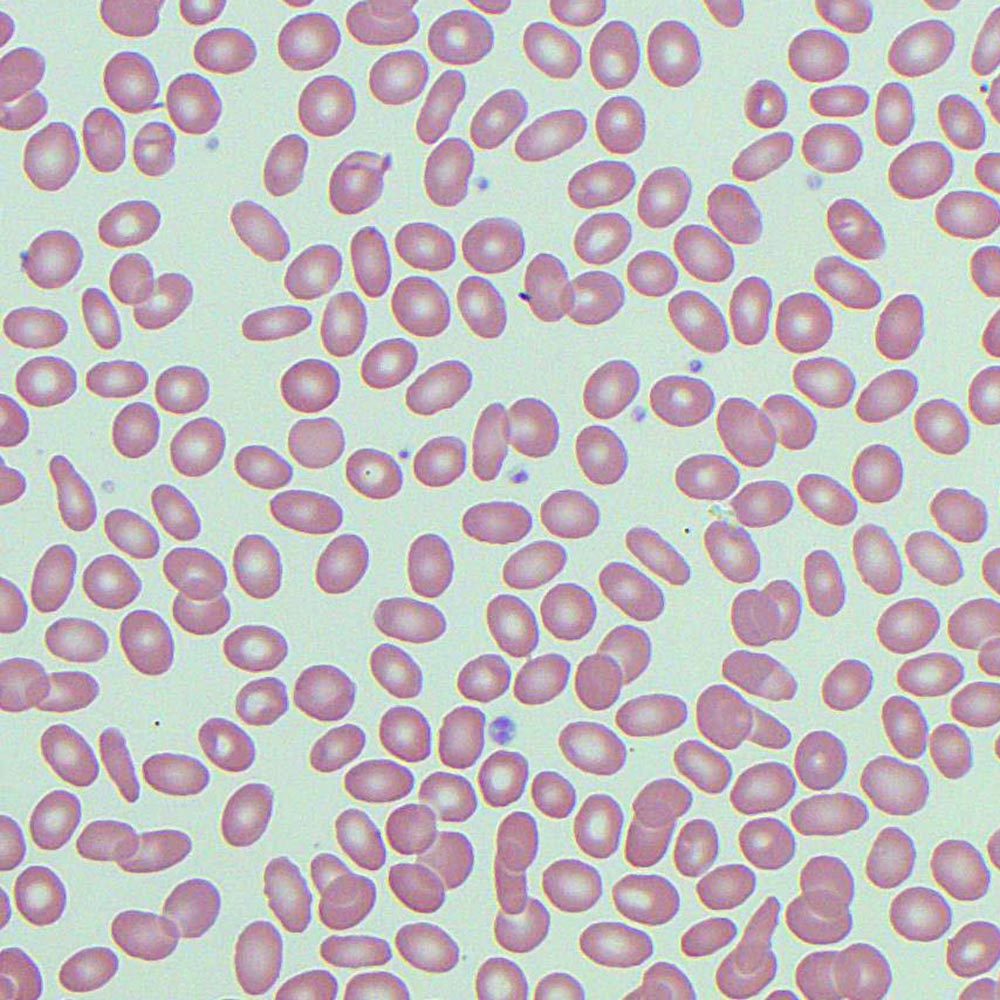
نام چند نوع inclusion را باید دانست و spelling آنها ممکن است در امتحان پرسیده شود؛ برای مثال، ممکن است از دانشجو بخواهند Basophilic stippling را بنویسد.
اجسام RBC عبارتاند از:
Cabot ring از رشتههای دوک منشأ میگیرد.
| مورد | توضیح مطرحشده |
|---|---|
| Howell–Jolly body | بقایای هسته؛ نقطه یا خال بنفش |
| basophilic stippling | نقاط آبی ناشی از بقایای ribosome و RNA |
| Pappenheimer body | چند گرانول بنفش نزدیک به هم، مثلاً ۵ یا ۶ گرانول شامل آهن و میتوکندریهای دژنرهشده |
| Cabot ring | بقایای رشتههای دوک؛ گرد، شبیه عدد ۸ انگلیسی یا رشتهای مویی و پیچیده |
گلبول قرمزی که انگار تکهای از آن گاز زده شده، bite cell یا blister cell نام دارد. این حالت هنگامی رخ میدهد که گلبول قرمز وارد طحال شود و ماکروفاژ تکهای از آن را بردارد.
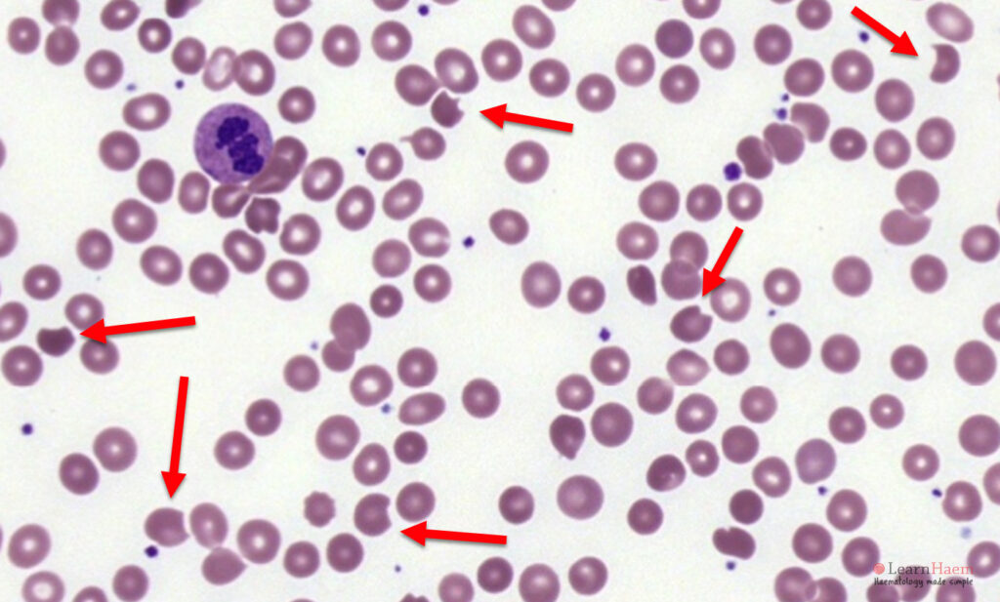
تصویر دوازدهمدر این فرایند، هموگلوبین دناتوره و به شکل جسمی جامد و رسوبی به هم چسبیده است، نه اینکه محلول باشد؛ به این هموگلوبین دناتورهشده Heinz body میگویند. Heinz body بهصورت inclusion دیده میشود. ماکروفاژ طحال هنگام عبور گلبول، بخشی را که Heinz body دارد جدا میکند؛ باقی گلبول به خون برمیگردد تا اکسیژن حمل کند و به بافت برساند و جای تکهٔ برداشتهشده به شکل هلال باقی میماند. ماکروفاژ این تکه را سریع برمیدارد، چون گلبولی که Heinz body دارد انعطافپذیریاش را از دست داده است.
هموگلوبین ممکن است بر اثر اکسیدشدن دناتوره شود. آهن ⁺Fe² به ⁺Fe³ اکسید میشود؛ برای مثال، ممکن است فرد داروی اکسیدکننده مصرف کرده باشد یا باقالی خورده باشد. باقالی مواد اکسیدکنندهٔ قوی دارد و این وضعیت را favism میگویند. بااینحال، خوردن باقالی لزوماً در همه مشکل ایجاد نمیکند، چون گلبول قرمز راه دفاعیای در برابر مواد اکسیدکننده دارد: glutathione.
GSH همان glutathione است؛ یک تریپپتید کوچک حاوی سه آمینواسید. وقتی مادهٔ اکسیدکننده وارد بدن میشود، گلوتاتیون با آن مقابله میکند و هیدروژن خود را به آن میدهد؛ گلوتاتیون خودش اکسید میشود و به GSSG تبدیل میشود. اگر گلوتاتیون مرتب با مواد اکسیدکننده مقابله کند، گلوتاتیون اکسیدشده باید دوباره احیا شود. آنزیم G6PD (glucose-6-phosphate dehydrogenase) در مکانیسمی NADPH به وجود میآورد. NADPH هیدروژن خود را به گلوتاتیون اکسیدشده میدهد و گلوتاتیون دوباره احیا میشود.
آنزیم این واکنش، GSH peroxidase میباشد.
بنابراین، بیماری که bite cell دارد ممکن است کمبود G6PD داشته باشد. اگر چنین بیماری داروی اکسیدکننده مصرف کند، چون G6PD ندارد، گلوتاتیونش اکسید میشود و دیگر گلوتاتیونی برای خنثیکردن مواد اکسیدکننده باقی نمیماند. هموگلوبین رسوب میکند و Heinz body تشکیل میشود؛ سپس طحال Heinz body را برمیدارد و bite cell ایجاد میشود. دیدن این مورفولوژی میتواند با مصرف داروی اکسیدکننده، کمبود G6PD یا هموگلوبینهای ناپایدار ارتباط داشته باشد؛ هموگلوبینهای ناپایدار بعداً تدریس میشوند.
Heinz body با رنگ Wright رنگ نمیگیرد؛ بنابراین، در اسمیر خون محیطی بیماری که کمبود G6PD دارد و داروی اکسیدکننده مصرف کرده است، ممکن است با این رنگ دیده نشود. اما با رنگ vital، مانند رنگآمیزی reticulocyte، قابل مشاهده است. در رنگآمیزی reticulocyte، Heinz body به شکل جسمی گرد و چسبیده به حاشیه دیده میشود. با رنگآمیزی supravital میتوان reticulocyte، Heinz body و هموگلوبین را بررسی کرد. reticulocyte رشتهرشته دیده میشود، اما Heinz body چنین ظاهری ندارد و با رنگ vital دیده میشود.
ژن G6PD روی کروموزوم X قرار دارد. آقایان نیز مبتلا میشوند و خانمها هم ممکن است مبتلا شوند، اما شیوع در آقایان بیشتر است.
در آزمایشگاه نوزادان، یکی از تستهایی که انجام میشود تست G6PD است. اگر نوزاد کمبود G6PD داشته باشد، فهرستی از داروهایی که نباید مصرف کند در اختیار خانواده قرار میگیرد، چون مصرف آن داروها میتواند گلبولها را اکسید کند و Heinz body ایجاد کند. پشت این مورفولوژی ممکن است یک مشکل زمینهای وجود داشته باشد.
| مورد بررسی | نکتهٔ مطرحشده |
|---|---|
| Wright | Heinz body با این رنگ رنگ نمیگیرد و ممکن است در اسمیر دیده نشود |
| رنگ vital | Heinz body قابل مشاهده است |
| رنگآمیزی reticulocyte | Heinz body به شکل جسمی گرد و چسبیده به حاشیه دیده میشود؛ reticulocyte رشتهرشته دیده میشود |
| رنگآمیزی supravital | میتوان reticulocyte، Heinz body و هموگلوبین را بررسی کرد |
| ژن G6PD | روی کروموزوم X قرار دارد؛ شیوع در آقایان بیشتر است |
در فرد مبتلا به کمبود G6PD، برای مثال فرد مبتلا به favism، مصرف ماده یا داروی اکسیدکننده میتواند Heinz body ایجاد کند و باعث تخریب شدید گلبولها شود؛ هموگلوبین ممکن است از ۱۵ به ۷ برسد و کمخونی شدید ایجاد شود.
بهعنوان مثال، گفته شد که در یک بیمارستان، پس از یک عروسی که باقالیپلو داده بودند، افراد زیادی بدحال شدند و در اسمیر خون آنها تعداد زیادی bite cell دیده شد. به آنها خون و سرم دادند و پس از چند روز بستری بهبود پیدا کردند. دیویسین، کانویسین و ایزویورامیل از مواد اکسیدکنندهٔ قوی معرفی شدند. در تصویر، Heinz body دیده میشود و گلبول قرمز میترکد.
گاهی در تصویر گلبولهای قرمز، بعضی سلولها مات و تار و بعضی واضحاند. ماتبودن ممکن است به این دلیل باشد که بیمار چربی خون بالایی داشته یا غذای چرب خورده باشد. اگر بیمار ۹ تا ۱۲ ساعت ناشتا باشد، حتی اگر شب قبل غذای چرب خورده باشد، پلاسما باید شفاف باشد. اگر پلاسما چرب باشد، ممکن است بیمار اختلال چربی داشته باشد یا صبحانه یا غذای چرب خورده باشد.
این وضعیت مورفولوژی گلبولها را مات میکند؛ به این گلبولهای قرمز مات blurred RBC میگویند و یکی از علتهای آن میتواند hyperlipidemia باشد. به همین دلیل، از بیمار خواسته میشود برای آزمایش خون ناشتا مراجعه کند. در تصویر دیگری نیز پلاسما شفاف نبود و چرب به نظر میرسید؛ این مورد به خوردن غذای چرب نسبت داده شد و میتواند باعث مات دیدهشدن گلبولها شود. در تصویر دیگری basophilic stippling دیده میشد.
در rouleaux، گلبولهای قرمز مانند ستونی از سکه روی هم قرار میگیرند. این حالت در اثر کاهش پتانسیل زتا ایجاد میشود و کاهش پتانسیل زتا با پروتئینهای فاز حاد ارتباط دارد. در توضیح مطرح شد که این تغییر با اثر اینترلوکینها بر کبد و سلولهای B لنفوسیتی و افزایش ایمونوگلوبولینها و پروتئینهای فاز حاد، از جمله CRP و فیبرینوژن، همراه است. کاهش پتانسیل زتا موجب میشود گلبولهای قرمز مانند ستون سکه روی هم قرار بگیرند.
در صورت مشاهدهٔ rouleaux، انتظار داریم erythrocyte sedimentation rate غیرطبیعی باشد. بیمار ممکن است التهاب مزمن، عفونت، بیماری روماتیسمی یا بیماری بدخیم داشته باشد؛ بنابراین، گزارش rouleaux formation اهمیت دارد.
| مورفولوژی یا یافته | ویژگی و ارتباط مطرحشده |
|---|---|
| Rouleaux | گلبولهای قرمز مانند ستون سکه روی هم قرار میگیرند |
| کاهش پتانسیل زتا | با پروتئینهای فاز حاد ارتباط دارد و موجب آرایش rouleaux میشود |
| پروتئینهای مطرحشده | ایمونوگلوبولینها، CRP و فیبرینوژن |
| یافتهٔ مورد انتظار | erythrocyte sedimentation rate غیرطبیعی |
| وضعیتهای همراهِ مطرحشده | التهاب مزمن، عفونت، بیماری روماتیسمی یا بیماری بدخیم |
در echinocyte نیز گلبول قرمز زائده دارد، اما زائدهها شبیه دندانههای چرخدندهاند، اندازههای مشابهی دارند و با فاصلههای منظم قرار گرفتهاند. Echinocyte اغلب laboratory artifact است؛ یعنی چیزی که در بدن بیمار وجود ندارد، اما در آزمایشگاه ایجاد شده است. ضدانعقاد زیاد یا ماندن خون از علتهای احتمالی آناند. ممکن است در موارد غیرطبیعی هم پیدا شود، اما باید حالت طبیعی را از غیرطبیعی جدا کرد.
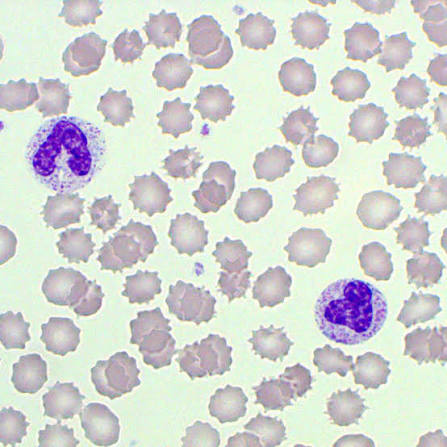
تصویر چهاردهمدر اثر حرارت نیز گلبول قرمز میتواند بسوزد و جوانه بزند و تکههایی از آن وارد خون شوند. حداکثر دمایی که گلبول قرمز طبیعی تحمل میکند ۴۹ درجهٔ سانتیگراد است؛ اگر دما بالاتر برود، گلبول میسوزد و جوانه میزند، جوانهها از آن جدا میشوند و خون پر از تکههای گلبول قرمز میشود.
نمونهٔ خون ممکن است در اثر گرما بسوزد؛ برای مثال، اگر در تابستان پشت شیشهٔ ماشین بماند. این یک خطای پیشآزمایشگاهی است. خود بیمار نیز ممکن است دچار سوختگی شده باشد و در سوختگی، گلبولها در دمای بالاتر از ۴۹ درجه آسیب ببینند. سوختگی میتواند عوارض زیادی داشته باشد، از جمله فعالشدن انعقاد خون و عفونت. قانون ۹ برای برآورد درصد سطح بدن سوخته به کار میرود و سوختگی جزئی هم ممکن است آسیب موضعی ایجاد کند.
| مورد | نکتهٔ مطرحشده |
|---|---|
| گلبول قرمز طبیعی | حداکثر دمای تحمل آن ۴۹ درجهٔ سانتیگراد بیان شد |
| دمای بالاتر از ۴۹ درجه | گلبول میسوزد و جوانه میزند؛ جوانهها جدا میشوند و تکههایی وارد خون میشوند |
| نمونهٔ پشت شیشهٔ ماشین | ممکن است در اثر گرما آسیب ببیند؛ خطای پیشآزمایشگاهی |
| سوختگی بیمار | گلبولها ممکن است در دمای بالاتر از ۴۹ درجه آسیب ببینند؛ از عوارض سوختگی فعالشدن انعقاد خون و عفونت است |
| قانون ۹ | برای برآورد درصد سطح بدن سوخته به کار میرود |
گلبولهایی که هالهٔ مرکزیشان بزرگ شده و تقریباً حلقهای به نظر میرسند، microcytic hypochromic RBC هستند. microcytic hypochromia هم در کمخونی فقر آهن و هم در ناقلین ژن تالاسمی دیده میشود. اگر در CBC خانمی MCV زیر ۸۰ باشد، باید بررسیهای تکمیلی انجام شود. MCV و MCH پایین میتوانند در iron deficiency یا ناقلین ژن تالاسمی دیده شوند؛ ناقلین ژن تالاسمی بعداً تدریس میشوند.
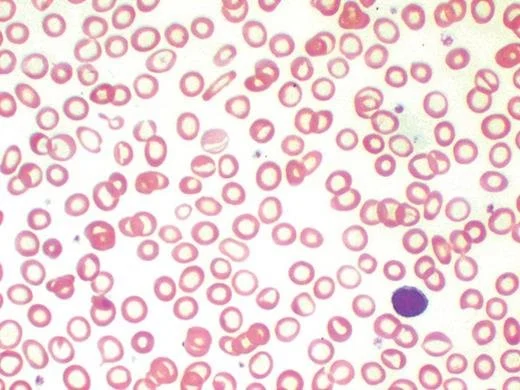
تصویر شانزدهمدر مقابل، گلبولهای قرمز بزرگ و تخممرغی همراه با hypersegmentation نوتروفیلها، یعنی macro-ovalocyte همراه با hypersegmented neutrophil، در کمخونی مگالوبلاستیک دیده میشوند.
| الگوی گلبول و اندکس | مواردی که در درس با آن ارتباط داده شد |
|---|---|
| Microcytic hypochromia؛ MCV و MCH پایین | کمخونی فقر آهن یا ناقلین ژن تالاسمی |
| MCV زیر ۸۰ در CBC خانم | نیاز به بررسیهای تکمیلی |
| Macro-ovalocyte همراه با hypersegmented neutrophil | کمخونی مگالوبلاستیک |
گلبول قرمز کوچکتر و بدون هالهٔ مرکزی را spherocyte میگویند؛ گلبولی توپر و کروی که برخلاف گلبول طبیعی هالهٔ مرکزی ندارد. اسفروسیت میتواند ناشی از اختلال و جهش در پروتئینهای غشای گلبول قرمز باشد. غشا پایدار نیست و بخشی از آن در خون و پلاسما از دست میرود؛ درنتیجه، گلبول کروی میشود.
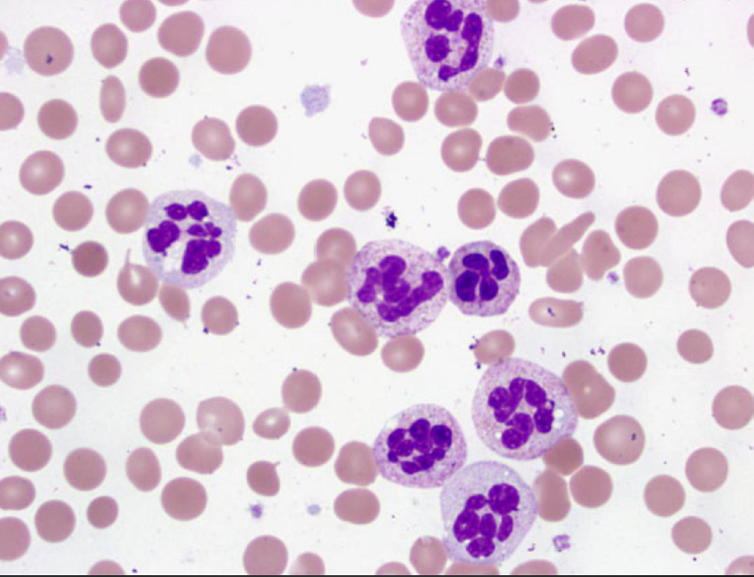
تصویر هفدهماگر بیش از ۲۰ گلبول قرمز spherocyte ببینیم، به انتهای نام مورفولوژی پسوند -osis اضافه میکنیم و spherocytosis میگوییم. به همین شکل، macrocytosis و elliptocytosis گفته میشود.
اگر بیمار spherocyte داشته باشد، ممکن است علت آن موتاسیونهای غشایی باشد. اسفروسیتها در طحال بهوسیلهٔ ماکروفاژها خورده میشوند؛ درنتیجه، بیلیروبین بالا میرود، زیرا هموگلوبین گلبول قرمزی که لیز میشود به بیلیروبین تبدیل میشود و بیمار ممکن است زرد شود. سفیدی چشم نیز در زردی تغییر رنگ میدهد. هنگام ارزیابی بیمار کمخون، پزشک چشم او را نگاه میکند؛ زردی میتواند نشانهٔ کمخونی همولیتیک و ازبینرفتن گلبولها در طحال یا خون باشد.
در بیماری که spherocyte دارد، طحال گلبولها را برمیدارد و میخورد. برداشتن طحال ممکن است تخریب گلبولها را کمتر کند، اما تصمیم درمانی به علت بیماری بستگی دارد. در اسفروسیتوز، اگر spherocyte ببینیم، آزمایش مستقیم Coombs هم انجام میدهیم. اگر Coombs مستقیم مثبت باشد، درمان با دارو شروع میشود و لزوماً نیازی به برداشتن طحال نیست؛ این موضوع بعداً تدریس میشود.
به برخی گلبولها mushroom cell یا pinched RBC میگویند. اینها از انواع hereditary spherocytosis هستند و با جهش band 3 ارتباط دارند. Band 3 یکی از پروتئینهای غشاست؛ بنابراین، گلبول قرمز قارچی یک نوع spherocytosis ارثی است که از نظر مولکولی جهش در پروتئین band 3 دارد.
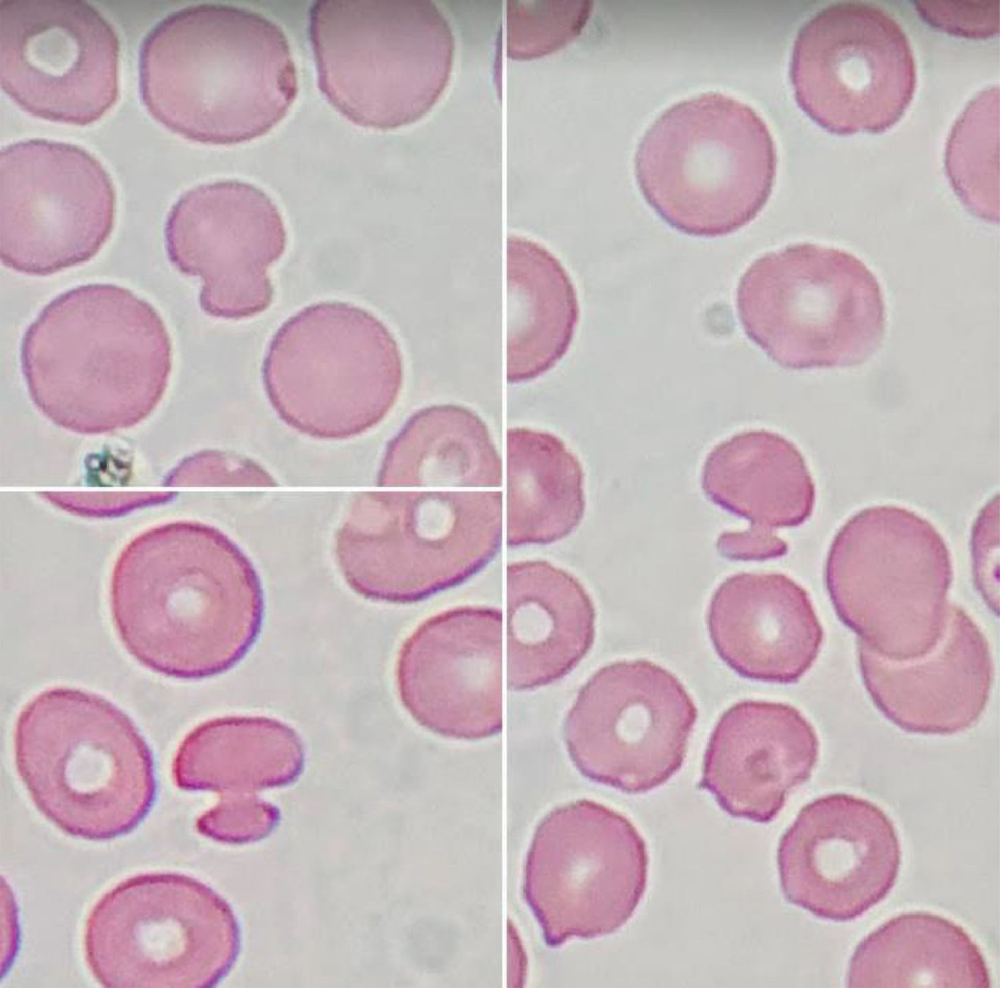
تصویر هجدهماگر بیش از ۲۰٪ گلبولها elliptocyte باشند، elliptocytosis گفته میشود. برای مقایسه، محور طولی و عرضی گلبول قرمز را در نظر میگیریم:
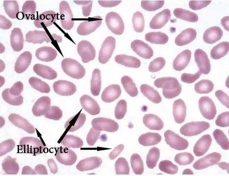
تصویر نوزدهمElliptocyte و ovalocyte با اختلالات غشا ارتباط دارند. بعضی از این موارد نیاز به برداشتن طحال دارند و بعضی ندارند. برخی انواع elliptocytosis مشکلی برای بیمار ایجاد نمیکنند؛ برخی دیگر با شکستن گلبولها همراهاند و ممکن است elliptocyte و گلبولهای تکهتکهشده با هم دیده شوند. این حالت ارثی است.
| مورفولوژی | معیار یا ویژگی گفتهشده |
|---|---|
| Elliptocytosis | بیش از ۲۰٪ گلبولها elliptocyte باشند |
| Elliptocyte | محور طولی بیش از دو برابر محور عرضی؛ گلبول سیگاری |
| Ovalocyte | محور طولی بزرگتر از محور عرضی، اما حداکثر دو برابر |
| Macro-ovalocyte | ovalocyte بزرگ؛ در کمبود ویتامین B12 دیده میشود |
گلبول قرمزی که هالهٔ مرکزی آن بهجای گرد بودن، شکافی شبیه دهان ماهی دارد، stomatocyte نامیده میشود. اگر بیش از ۲۰٪ گلبولها stomatocyte باشند، stomatocytosis گفته میشود. برای بعضی مورفولوژیها، وقتی بیش از ۲۰٪ دیده شوند، پسوند -osis به کار میرود؛ مانند spherocytosis و elliptocytosis.
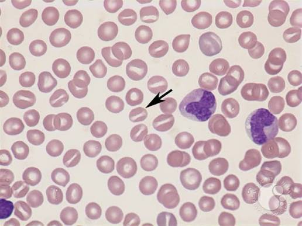
تصویر بیستمبرای stomatocyteها نیز moderate stomatocytosis برای تعداد ۱۱ تا ۲۰ و few stomatocytes برای کمتر از ۱۱ به کار میرود. این موارد در آزمایشگاه دیده میشوند. Stomatocyteها بیشتر در بیماریهای کبد، بهخصوص بیماری کبد ناشی از مصرف الکل، مشاهده میشوند.
| گزارش مورفولوژی | تعداد ذکرشده |
|---|---|
| Few stomatocytes | کمتر از ۱۱ |
| Moderate stomatocytosis | ۱۱ تا ۲۰ |
| Stomatocytosis | بیش از ۲۰٪ گلبولها stomatocyte باشند |
گلبولهایی که در اطراف و مرکز هموگلوبین دارند و شکل هدفمانند پیدا میکنند، target cell یا target RBC نام دارند. در بدن شکل آنها به کلاه مکزیکی یا زنگ کلیسا تشبیه شد؛ اما در اسمیر شکلشان بهصورت هدف دیده میشود. در گردش خون، آرایش هموگلوبین به حاشیه و بخش مرکزی میرود و در اسمیر، target cell دیده میشود.
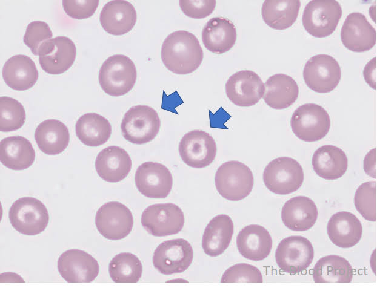
تصویر بیست و یکمTarget cellها بهخصوص در مشکلات کبد، یرقان ناشی از انسداد مجاری صفراوی و اختلالات هموگلوبین مشاهده میشوند.
گلبول قرمزی که زائدههایی با فواصل نامنظم و طولهای متفاوت دارد، acanthocyte نامیده میشود. این شکل به مالاریا ربطی ندارد و نوعی گلبول قرمز غیرطبیعی است. Acanthocyte در بیماریهای کبد، سوءتغذیه، اختلالات نورولوژیک و کمکاری تیروئید دیده میشود؛ بنابراین، گزارش آن بیانگر مورفولوژی غیرطبیعی است.
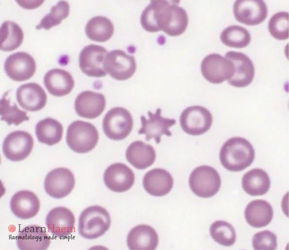
تصویر بیست و دومگلبولهای قرمز شکسته را fragmented RBC یا schistocyte میگویند. قطعهها ممکن است مثلثی یا شبیه کلاهخود (helmet) باشند. Schistocyteها میتوانند شکل کلاهخودی، زاویهدار یا micro-spherocyte داشته باشند. این مورفولوژی در موارد اورژانسی، مانند تشکیل لخته در عروق، دیده میشود. چون گلبولها شکستهاند، آنالایزر ممکن است آنها را بهجای پلاکت بشمارد.
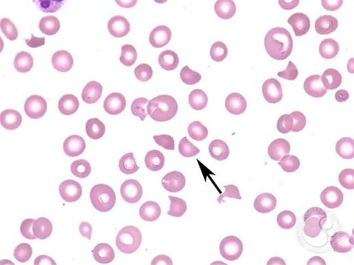
تصویر بیست و سومگزارش گلبول قرمز شکسته بسیار مهم است. اگر در خانم بارداری دو گلبول شکسته ببینیم، ممکن است او را بستری کنند، چون احتمال تشنج وجود دارد. مواردی که باعث دیدهشدن گلبول قرمز شکسته در خون میشوند ممکن است اورژانسی باشند؛ بعضی بیماران اگر ظرف ۲۰ تا ۲۴ ساعت رسیدگی نشوند، فوت میکنند. به همین دلیل، آزمایشگاه از پزشک میپرسد که آیا گلبول شکسته دیدهاید؛ حتی دیدن دو گلبول شکسته نیز اهمیت زیادی دارد. در هماتولوژی فقط کمخونی و تالاسمی مطرح نیست؛ عفونتهای میکروبی و ویروسی، بیماریهای سیستمیک و مشکلات انعقادی نیز میتوانند در CBC نهفته باشند.
| ویژگی schistocyte | نکتهٔ مطرحشده |
|---|---|
| شکل قطعهها | مثلثی، کلاهخودی، زاویهدار یا micro-spherocyte |
| ارتباط مطرحشده | موارد اورژانسی، مانند تشکیل لخته در عروق |
| شمارش در آنالایزر | ممکن است بهجای پلاکت شمرده شوند |
| اهمیت گزارش | حتی دیدن دو گلبول شکسته مهم دانسته شد؛ در خانم باردار ممکن است بستریکردن مطرح شود |
در پرسشهای پایان جلسه پرسیده شد که اگر هموگلوبین بیمار ۱۵ باشد، MCHC چقدر است. فرمول MCHC برابر است با:
MCHC = (هموگلوبین ÷ هماتوکریت) × ۱۰۰
چون RBC count در اختیار نیست، فقط MCHC را میتوان محاسبه کرد. هموگلوبین ۱۵ است و هماتوکریت سه برابر آن، یعنی ۴۵؛ پس ۱۵ تقسیم بر ۴۵، ضربدر ۱۰۰، برابر ۳۳ میشود.
پرسش دیگر دربارهٔ تفاوت RDW-SD و RDW-CV بود. در پاسخ گفته شد که RDW-SD تفاوت کوچکترین و بزرگترین گلبولها را نشان میدهد.
سؤال بعدی دربارهٔ سیر تکاملی گلبول قرمز بود:
سؤال آخر این بود که ferroportin چیست: کانال خروج آهن از ماکروفاژ و کانال ورود آهن از سلولهای گوارشی.
| واکنش یا فرایند | نقش B12 | نقش اسید فولیک | نکتهٔ مطرحشده |
|---|---|---|---|
| کمک به ساختهشدن تیمین و سنتز DNA | با اسید فولیک بهصورت تنگاتنگ عمل میکند | در واکنش تیمیدیلات سنتاز لازم است | کمبود هرکدام ساخت تیمین و سنتز درست DNA را مختل میکند |
| تبدیل هوموسیستئین به متیونین | نقش دارد | نقش دارد | افزایش هوموسیستئین میتواند باعث سختی عروق و مشکلات متعدد شود |
| تبدیل متیلمالونیلکوآنزیم A به سوکسینیلکوآنزیم A | نقش دارد | نقشی ندارد | سوکسینیلکوآنزیم A وارد چرخهٔ کربس میشود |
| شاخص یا یافته | الگوی گفتهشده در کمخونی مگالوبلاستیک |
|---|---|
| اندازه و شکل گلبول قرمز | بزرگ و تخممرغی؛ macro-ovalocyte |
| MCV | افزایش مییابد؛ بیش از ۱۰۰ از ویژگیهای مهم و پرتکرار در امتحان و کوییز بیان شد |
| MCH | بالا میرود |
| MCHC | طبیعی میماند |
| RDW | افزایش پیدا میکند |
| یافتهٔ آزمایشگاهی | کمبود اسید فولیک | کمبود B12 |
|---|---|---|
| متیلمالونیلاسید | طبیعی | بالا |
| هوموسیستئین | بالا | بالا |
| مورد | توضیح مطرحشده |
|---|---|
| Howell–Jolly body | از اجسام RBC نامبردهشده؛ در کمخونی مگالوبلاستیک نیز ممکن است دیده شود |
| basophilic stippling | از اجسام RBC نامبردهشده؛ spelling آن ممکن است در امتحان پرسیده شود |
| Pappenheimer body | از اجسام RBC نامبردهشده |
| Cabot ring | از اجسام RBC نامبردهشده؛ از رشتههای دوک منشأ میگیرد |
| مورد بررسی | نکتهٔ مطرحشده |
|---|---|
| Wright | Heinz body با این رنگ رنگ نمیگیرد و ممکن است در اسمیر دیده نشود |
| رنگ vital | Heinz body قابل مشاهده است |
| رنگآمیزی reticulocyte | Heinz body به شکل جسمی گرد و چسبیده به حاشیه دیده میشود؛ reticulocyte رشتهرشته دیده میشود |
| رنگآمیزی supravital | میتوان reticulocyte، Heinz body و هموگلوبین را بررسی کرد |
| ژن G6PD | روی کروموزوم X قرار دارد؛ شیوع در آقایان بیشتر است |
| مورفولوژی یا یافته | ویژگی و ارتباط مطرحشده |
|---|---|
| Rouleaux | گلبولهای قرمز مانند ستون سکه روی هم قرار میگیرند |
| کاهش پتانسیل زتا | با پروتئینهای فاز حاد ارتباط دارد و موجب آرایش rouleaux میشود |
| پروتئینهای مطرحشده | ایمونوگلوبولینها، CRP و فیبرینوژن |
| یافتهٔ مورد انتظار | erythrocyte sedimentation rate غیرطبیعی |
| وضعیتهای همراهِ مطرحشده | التهاب مزمن، عفونت، بیماری روماتیسمی یا بیماری بدخیم |
| مورد | نکتهٔ مطرحشده |
|---|---|
| گلبول قرمز طبیعی | حداکثر دمای تحمل آن ۴۹ درجهٔ سانتیگراد بیان شد |
| دمای بالاتر از ۴۹ درجه | گلبول میسوزد و جوانه میزند؛ جوانهها جدا میشوند و تکههایی وارد خون میشوند |
| نمونهٔ پشت شیشهٔ ماشین | ممکن است در اثر گرما آسیب ببیند؛ خطای پیشآزمایشگاهی |
| سوختگی بیمار | گلبولها ممکن است در دمای بالاتر از ۴۹ درجه آسیب ببینند؛ از عوارض سوختگی فعالشدن انعقاد خون و عفونت است |
| قانون ۹ | برای برآورد درصد سطح بدن سوخته به کار میرود |
| الگوی گلبول و اندکس | مواردی که در درس با آن ارتباط داده شد |
|---|---|
| Microcytic hypochromia؛ MCV و MCH پایین | کمخونی فقر آهن یا ناقلین ژن تالاسمی |
| MCV زیر ۸۰ در CBC خانم | نیاز به بررسیهای تکمیلی |
| Macro-ovalocyte همراه با hypersegmented neutrophil | کمخونی مگالوبلاستیک |
| مورفولوژی | معیار یا ویژگی گفتهشده |
|---|---|
| Elliptocytosis | بیش از ۲۰٪ گلبولها elliptocyte باشند |
| Elliptocyte | محور طولی بیش از دو برابر محور عرضی؛ گلبول سیگاری |
| Ovalocyte | محور طولی بزرگتر از محور عرضی، اما حداکثر دو برابر |
| Macro-ovalocyte | ovalocyte بزرگ؛ در کمبود ویتامین B12 دیده میشود |
| گزارش مورفولوژی | تعداد ذکرشده |
|---|---|
| Few stomatocytes | کمتر از ۱۱ |
| Moderate stomatocytosis | ۱۱ تا ۲۰ |
| Stomatocytosis | بیش از ۲۰٪ گلبولها stomatocyte باشند |
| ویژگی schistocyte | نکتهٔ مطرحشده |
|---|---|
| شکل قطعهها | مثلثی، کلاهخودی، زاویهدار یا micro-spherocyte |
| ارتباط مطرحشده | موارد اورژانسی، مانند تشکیل لخته در عروق |
| شمارش در آنالایزر | ممکن است بهجای پلاکت شمرده شوند |
| اهمیت گزارش | حتی دیدن دو گلبول شکسته مهم دانسته شد؛ در خانم باردار ممکن است بستریکردن مطرح شود |
| مورفولوژی | توصیف یا ارتباط مطرحشده |
|---|---|
| Poikilocytosis | تغییرات شکل گلبول قرمز |
| Anisopoikilocytosis | وجود همزمان تغییرات شکل و اندازهٔ گلبول قرمز |
| Macro-ovalocyte | گلبول قرمز بزرگ و تخممرغی؛ در کمخونی مگالوبلاستیک |
| Microcytic hypochromic RBC | هالهٔ مرکزی بزرگشده و ظاهر تقریباً حلقهای |
| Spherocyte | گلبول کوچکتر، توپر و کروی، بدون هالهٔ مرکزی |
| Mushroom cell یا pinched RBC | نوعی hereditary spherocytosis مرتبط با جهش band 3 |
| Elliptocyte | محور طولی بیش از دو برابر محور عرضی؛ گلبول سیگاری |
| Ovalocyte | محور طولی بزرگتر از محور عرضی، اما بیش از دو برابر نیست |
| Stomatocyte | هالهٔ مرکزی به شکل شکافی شبیه دهان ماهی |
| Target cell یا target RBC | هموگلوبین در اطراف و مرکز؛ شکل هدفمانند |
| Acanthocyte | زائدههایی با فواصل نامنظم و طولهای متفاوت |
| Fragmented RBC یا schistocyte | گلبول قرمز شکسته؛ ممکن است قطعات مثلثی، کلاهخودی، زاویهدار یا micro-spherocyte داشته باشد |
| Rouleaux | آرایش گلبولهای قرمز مانند ستونی از سکه |
| Echinocyte | زائدههای هماندازه و منظم شبیه دندانههای چرخدنده؛ اغلب laboratory artifact |
| Blurred RBC | گلبول قرمز مات و تار؛ یکی از علتهای مطرحشده hyperlipidemia است |
| Bite cell یا blister cell | گلبولی که بخشی از آن در طحال بهوسیلهٔ ماکروفاژ برداشته شده است |
| مورد | رابطه یا مقدار مطرحشده |
|---|---|
| فرمول MCHC | (هموگلوبین ÷ هماتوکریت) × ۱۰۰ |
| مثال | هموگلوبین ۱۵ و هماتوکریت ۴۵؛ MCHC برابر ۳۳ |
تفاوت نقش B12 و اسید فولیک را در سه واکنش یا فرایند مطرحشده در درس توضیح دهید.
هر دو در کمک به ساختهشدن تیمین و سنتز DNA و نیز در تبدیل هوموسیستئین به متیونین نقش دارند. در تبدیل متیلمالونیلکوآنزیم A به سوکسینیلکوآنزیم A فقط B12 نقش دارد و اسید فولیک نقشی ندارد.
یافتههای آزمایشگاهی مطرحشده برای افتراق کمبود B12 از کمبود اسید فولیک را بنویسید.
در کمبود اسید فولیک، متیلمالونیلاسید طبیعی و هوموسیستئین بالا است. در کمبود B12، هر دو متیلمالونیلاسید و هوموسیستئین بالا میروند.
تعریف hypersegmented neutrophil را همراه با معیارهای بیانشده شرح دهید.
نوتروفیل طبیعی ۲ تا ۵ لوب دارد. اگر بیش از ۵٪ نوتروفیلها پنج لوب داشته باشند، یا حتی یک نوتروفیل با ۶ لوب یا بیشتر دیده شود، اصطلاح hypersegmented neutrophil به کار میرود.
زنجیرهٔ رخدادهای توضیحدادهشده از اکسیدشدن هموگلوبین تا تشکیل bite cell را شرح دهید.
هموگلوبین اکسید و دناتوره میشود و Heinz body تشکیل میدهد. ماکروفاژ طحال هنگام عبور گلبول بخشی را که Heinz body دارد جدا میکند و bite cell به وجود میآید. در توضیح کمبود G6PD، اکسیدشدن glutathione و باقینماندن glutathione برای مقابله با مواد اکسیدکننده نیز در این فرایند مطرح شد.
تفاوت elliptocyte و ovalocyte را بر اساس محور طولی و عرضی توضیح دهید.
اگر محور طولی بیش از دو برابر محور عرضی باشد، گلبول elliptocyte یا گلبول سیگاری است. اگر محور طولی از محور عرضی بزرگتر باشد، اما بیش از دو برابر نباشد، ovalocyte گفته میشود.
کدام گزینه توصیف درستتری از جذب و انتقال ویتامین B12 در درس است؟
B12 از راه اتصال به فاکتور داخلی جذب میشود و ترانسکوبالامین آن را حمل میکند.
در کمبود B12، الگوی متیلمالونیلاسید و هوموسیستئین چگونه است؟
در کمبود B12، هر دو متیلمالونیلاسید و هوموسیستئین بالا میروند.
کدام گزینه دربارهٔ MCV و MCHC در کمخونی مگالوبلاستیک درست است؟
در کمخونی مگالوبلاستیک MCV بالا میرود و MCHC طبیعی میماند.
کدام مورد معیار hypersegmented neutrophil است؟
معیارهای گفتهشده بیش از ۵٪ نوتروفیلهای پنجلوبه یا وجود یک نوتروفیل با ۶ لوب یا بیشتر است.
کدام عبارت دربارهٔ Heinz body درست است؟
Heinz body هموگلوبین دناتورهشدهٔ رسوبی است؛ با رنگ Wright رنگ نمیگیرد، اما با رنگ vital قابل مشاهده است.
در کمبود اسید فولیک، کدام الگوی آزمایشگاهی در درس بیان شد؟
در کمبود اسید فولیک، متیلمالونیلاسید طبیعی میماند و هوموسیستئین بالا میرود.
کدام توصیف دربارهٔ rouleaux با محتوای درس سازگار است؟
Rouleaux آرایش گلبولهای قرمز مانند ستون سکه است و با کاهش پتانسیل زتا ارتباط دارد.
اگر محور طولی گلبول قرمز بیش از دو برابر محور عرضی باشد، چه نامی به کار میرود؟
در درس، گلبولی با محور طولی بیش از دو برابر محور عرضی elliptocyte یا گلبول سیگاری نامیده شد.
کدام عبارت دربارهٔ schistocyte درست است؟
Schistocyte گلبول قرمز شکسته است و چون قطعهها کوچکاند، آنالایزر ممکن است آنها را بهجای پلاکت بشمارد.
فرمول MCHC که در درس آمده کدام است؟
فرمول MCHC برابر است با (هموگلوبین ÷ هماتوکریت) × ۱۰۰.
ادیتور: حسین حسینی
منابع استفادهشده:
برآورد تقریبی تکمیل محتوا: حدود ۹۵٪؛ این برآورد بر پایهٔ محتوای ارائهشده است و اثبات ریاضیِ کاملبودن نیست.